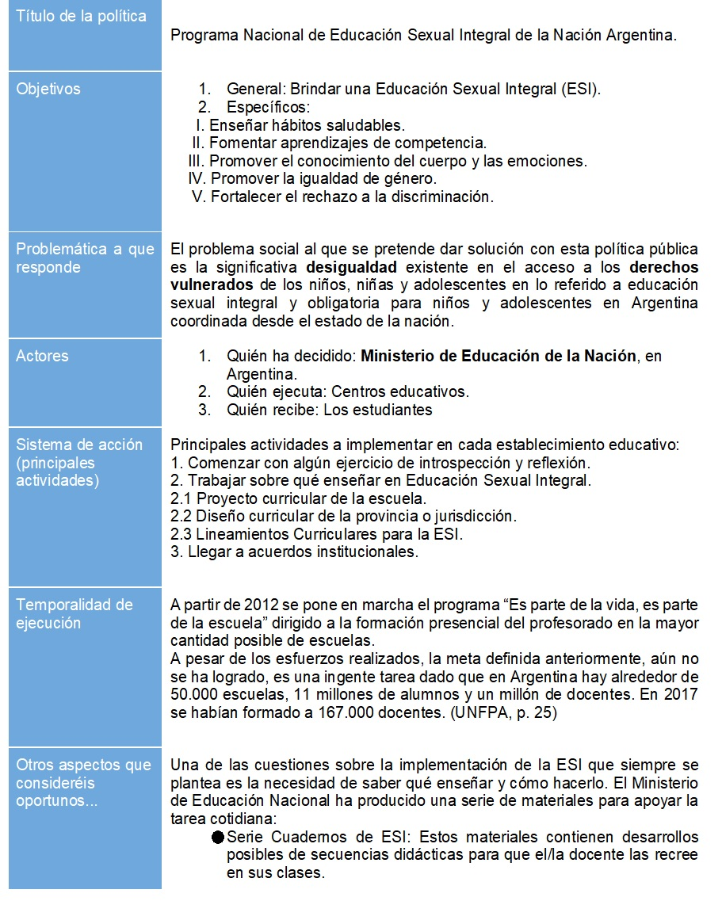
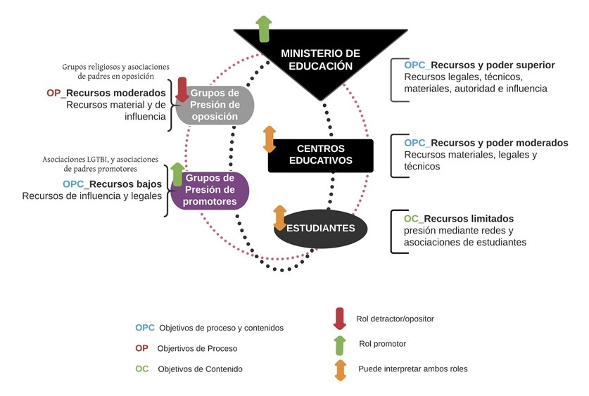
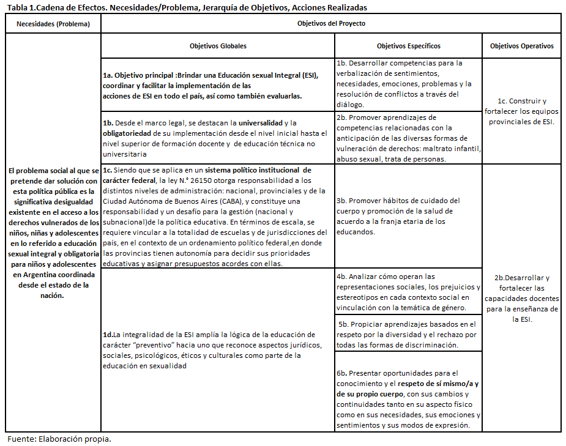
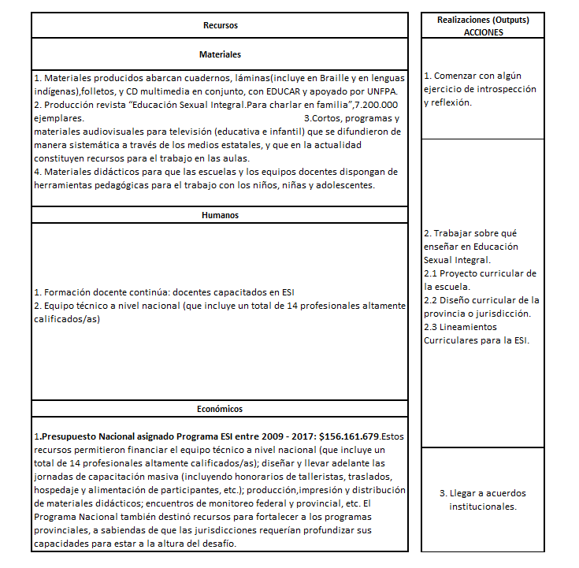
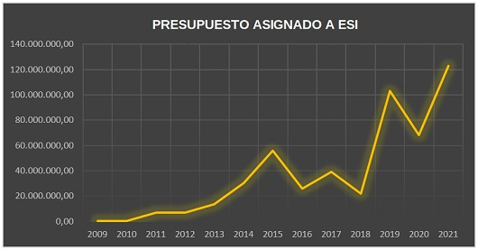
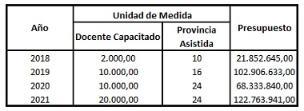

PRESUPUESTO CON PERSPECTIVA DE GÉNERO (PPG) Y DEMOCRACIA: ¿ES POSIBLE QUE DESDE EL PPG SE FORTALEZCA LA DEMOCRACIA? ¿ES POSIBLE SU MEDICIÒN Y CRUZAMIENTO DE DATOS?
La palabra democracia proviene etimológicamente del griego, de la fusión de demos (‘pueblo’) y kratos (‘poder’). Democracia significa, pues, una forma de gobierno en la que es el pueblo quien gobierna (Dahl, R. A.,1992).
En este sentido, es la democracia la herramienta fundamental que garantiza los derechos humanos en condiciones de igualdad equidad entre los géneros. Una de las formas para fortalecer el sistema democrático, se fundamenta en el reconocimiento de la participación equitativa entre varones y mujeres, requisito fundamental para garantizar el desarrollo económico, político y cultural en una sociedad igualitaria.
Las condiciones sociales y económicas inclusivas se garantizan a medida que la ciudadanía, en general y sin distinción de género, sea capaz de ejercer sus derechos y libertades avalados por la Constitución Argentina y Tratados y Convenciones Internacionales a los que Argentina se encuentre adherido.
Uno de los pilares fundamentales que sostiene a la democracia es la igualdad o el respeto a los derechos esenciales. Es por esta razón que resulta imprescindible promover la participación de las mujeres como elemento esencial en la democracia y la naturaleza y el grado de participación es un indicador clave de la calidad de la cultura democrática.
Las iniciativas presupuestarias con perspectiva de género, representan un importante desafío para la Administración Pública Nacional, Subnacional y/o Municipal. Este proceso implica diseñar estrategias técnicas adecuadas para adoptar la búsqueda de la igualdad entre los géneros desde el gasto que se visibiliza en el Presupuesto.
No hay que perder de vista que, el diseño de las políticas públicas requiere de una mirada inclusiva, en la que se consideren medidas de acción positiva en relación a las mujeres afectadas y vulneradas en algunos de sus derechos esenciales tal es el caso de las mujeres migrantes, las niñas, las mujeres con discapacidad, las mujeres mayores, las mujeres viudas y las mujeres víctimas de violencia de género. Es menester, considerar al colectivo del LGTBIQ+ al momento de formular planes de acción gubernamental.
El acceso a los derechos fundamentales avalados por un sistema democrático, solo serán garantizados cuando de simples expresiones de deseos, se transformen en parte de la operacionalización de los planes gobierno. Este tránsito se logra, cuando a través del presupuesto, se garantiza la aplicación y distribución de los recursos en base a principios como igualdad, equidad e inclusión. No obstante, el proceso ya comenzó, queda mucho recorrido para seguir fortaleciendo la democracia, innovando desde el sector público metodologías que incluyan al colectivo sin dejar a nadie atrás.
PROBLEMÁTICA: Actualmente, a pesar de la evolución del movimiento feminista, en los gobierno nacional y Subnacionales, los datos demuestran que persiste un bajo porcentaje de participación de las mujeres en la gestión del poder desde las instituciones gubernamentales, áreas o direcciones y en los niveles políticos del Poder Ejecutivo Nacional (11% fueron ministras mujeres del PEN en el año 2016 ).
La consideración al género supone la adopción de una propuesta de inclusión, de búsqueda de igualdad y equidad, por la que se asume que las relaciones que se establecen entre mujeres y varones sólo podrán resolverse en tanto incluyan cambios en los varones y también en las propias mujeres (Gamba, 2008). En sentido epistemológico, el género nos aproxima a la realidad de varones y mujeres atendiendo, fundamentalmente, a las relaciones de poder y oportunidades desiguales que se establecen en todos los ámbitos de la vida social: la sexualidad, la familia, el trabajo, la política, la salud, etc.
Los presupuestos públicos buscan integrar un enfoque de derechos humanos priorizando la inclusión, y la igualdad de género. Esta iniciativa resulta un gran desafió, siendo que visibilizan cómo el gasto público y la aplicación y distribución de los recursos públicos se encuentran inseparablemente interconectados con la garantía efectiva de los derechos.
La identificación de los problemas, es prioritaria para darle nacimiento a nuevos proyectos que permitan diseñar estrategias de solución que aborden los mismos. En este sentido, darle participación y voz en el proceso de formulación del presupuesto a todas las partes involucradas, permitirá el empoderamiento de las mujeres para involucrarse y apropiarse de una metodología que este dirigida a posicionarlas en igualdad de condiciones con respecto a los varones. La viabilidad de contribuir con metodologías apropiadas para incorporar la perspectiva de género, es posible siempre que, todas las voces sean tenidas en cuenta, incluyendo a uno de los colectivos más vulnerados en sus derechos como es la comunidad LGTBIQ+.
No Dejar a Nadie Atrás nos obliga a centrarnos en la discriminación y las desigualdades (a menudo múltiples e interceptadas) que socavan la entidad de las personas como titulares de derechos. Muchas de las barreras a las que se enfrentan las personas para acceder a servicios, recursos e igualdad de oportunidades no son simplemente accidentes del destino o falta de disponibilidad de recursos, sino el resultado de leyes, políticas y prácticas sociales discriminatorias que dejan a grupos particulares de personas cada vez más atrás.
DESAFÍO: En la actualidad, uno de los mayores desafíos que interpelan a las administraciones públicas de la República Argentina, se relaciona con abordar la desigual distribución por género de los recursos del estado, diseñando metodologías presupuestarias apropiadas que permitan el monitoreo de las políticas públicas. De hecho, la medición de los resultados obtenidos permite la mejora continua de las acciones gubernamentales que se traducen en una disminución de la brecha de género y en la generación de valor público en condiciones de igualdad y equidad.
Es dable destacar, la necesidad imperante de diseñar una metodología de medición de los resultados territoriales logrados mediante las acciones gubernamentales con perspectiva de género, en el marco de la Gestión para Resultados (GpR). A través de la interpretación de los datos presupuestarios, participar en distintos espacios multiactorales e interpoderes, es fundamental para contribuir en la reflexión sobre la evolución de la matriz productiva local equitativa e igualitaria.
Asimismo, los indicadores y el rating de democracia más reconocido es el que publica Freedom House, una ONG ubicada en Washington, D. C. A partir de expertos en cada país, Freedom House elabora un índice de libertades políticas (basado en diez indicadores) y uno de libertades civiles (basado en dieciséis indicadores). Cada uno de los índices se ordena en una escala de 1 a 7 y la media de estos índices se interpreta como el nivel de democracia. Los países son entonces clasificados como libres (entre 1,0 y 2,5), parcialmente libres (entre 3,0 y 5,0) o no libres (entre 5,5 y 7,0). El indicador está disponible para todos los países desde 1970 y se ha utilizado mucho en investigaciones académicas que estudian la relación entre democracia y variables de tipo económico y social. Freedom House también publica el índice de democracia electoral, que se basa en una definición más estrecha de democracia, que tiene en cuenta fundamentalmente si los cargos políticos son elegidos vía elecciones regulares, libres e imparciales y el partido en el gobierno no puede cambiarse si no es a través de elecciones.
La relación entre el presupuesto y la democracia, permite el cruzamiento de los resultados alcanzados mediante la medición a través de los indicadores pertinentes para cada variable identificada. En caso de centrar el análisis en la variable de participación por género, que es una variable cualitativa medida en ambos indicadores, es posible encontrar una relación entre ellos.
Por un lado, desde el presupuesto es posible medir la participación por género en los distintos programas presupuestarios mediante el indicador denominado Indicador de Feminización y el Indicador de Brecha de género.
El análisis de los datos que se generan de estas dos variables cualitativas cuantificadas: Democracia y Presupuesto, permiten validar que mediante el diseño de políticas públicas con perspectiva de género es posible el fortalecimiento de la democracia, aumentando la participación de las mujeres y de los diversos colectivos LGTBIQ+, en ambos espacios.
SÍNTESIS DEL ANÁLISIS DE LAS POLÍTICAS PÚBLICAS ESTUDIO DE CASO: ESI


La problemática social que se aborda desde ESI, se construye mediante la toma de conciencia de la situación sanitaria: elevadas tasas de embarazo no deseado en adolescentes, abandono escolar, crecimiento de casos de aborto, mortalidad materna y aumento de los casos del VIH (Cruz, J. 2013, p.35), determinando que su causa es la falta de información y formación en los adolescentes. En el 2004, el Ministerio de Salud instaló definitivamente el problema en agenda pública.
En lo que respecta a la implementación, desde la promulgación de la Ley ESI y la redacción consensuada de lineamientos curriculares comunes, una serie de estudios indica que se ha avanzado en su institucionalización, aunque falta camino por recorrer para alcanzar a las aulas de todo el país.


Desde el enfoque cuantitativo, se deduce que existirían incongruencias entre las metas presupuestarias con respecto al Presupuesto asignado al Programa. De acuerdo a la Tabla 3, se observa que la cantidad proyectada de docentes que se esperaba capacitar en 2019 y 2020 es la misma, lo que varía es la cantidad de provincias. Por lo tanto, a prima facie, deduzco que resultó dificultoso capacitar la cantidad total de docentes proyectados en las 16 provincias, aunque considero pertinente analizar los informes de gestión de cada provincia y de Nación para fortalecer tal conclusión.

Tabla 2: Presupuesto Asignado año a año
| AÑO |
PRESUPUESTO ASIGNADO A ESI |
| 2009 |
300.000,00 |
| 2010 |
478.000,00 |
| 2011 |
6.935.936,00 |
| 2012 |
6.713.855,00 |
| 2013 |
13.414.720,00 |
| 2014 |
30.246.396,00 |
| 2015 |
55.755.738,00 |
| 2016 |
25.637.847,00 |
| 2017 |
39.000.000,00 |
| 2018 |
21.852.645,00 |
| 2019 |
102.906.633,00 |
| 2020 |
68.333.840,00 |
| 2021 |
122.763.941,00 |
Tabla 3: Metas Presupuestarias: Unidad de medida y Presupuesto Asignado

Fuente: Elaboración propia.
La Ley 26.150 ESI, se enmarca en la Agenda Mundial 2030 (ODS), : su ejecución se establece desde arriba hacia abajo con perspectiva racional (top-down); el engranaje de coordinación se inicia desde una agencia central, presentándose una clara distinción entre el universo político y administrativo, el segundo supeditado al primero.
En el cuerpo de la Ley ESI, no se ha previsto la evaluación de su implementación. Sin embargo, desde la sanción de la ley (2006) existen evaluaciones del desarrollo y cumplimiento de los objetivos desde lo académico. Asimismo, desde la UNESCO y el Ministerio de Educación de la Nación se ha ido trabajando y relevando experiencias sobre su implementación para evaluar su efectividad y el cumplimiento de los objetivos.
Según Faur, en ESI lo fundamental es el involucramiento de distintos actores de la comunidad educativa para lograr una implementación efectiva a nivel local y de manera articulada a nivel nacional.
Diez años más tarde el avance ha sido notorio, sin embargo, se carece de un análisis sistemático de carácter cuantitativo para realmente evaluar su efectividad y medirla a lo largo del tiempo, proyecto que se encuentra en marcha desde lo académico (Faur, 2016, p. 69) y legislativo.
A modo singular, el contexto que nos interpela como sociedad actualmente, contribuye al logro del propósito del Programa Nacional ESI. En el año 2006, se elaboró un proyecto de ley en el marco de la campaña Nacional por el Derecho al Aborto Legal, Seguro y Gratuito. El 30 de diciembre del 2020, el Proyecto de Ley de Interrupción Voluntaria del Embarazo (IVE) fue convertido en ley.
Como reflexión final, considero que, para lograr un análisis integrado y sostenible de las políticas públicas, es necesario fortalecer las capacidades del recurso humano en el Sector
¹ Objetivos de Desarrollo Sostenible (ODS), aprobados por 196 países en 2005. Actualmente nos encontramos en la “última década de la acción”.